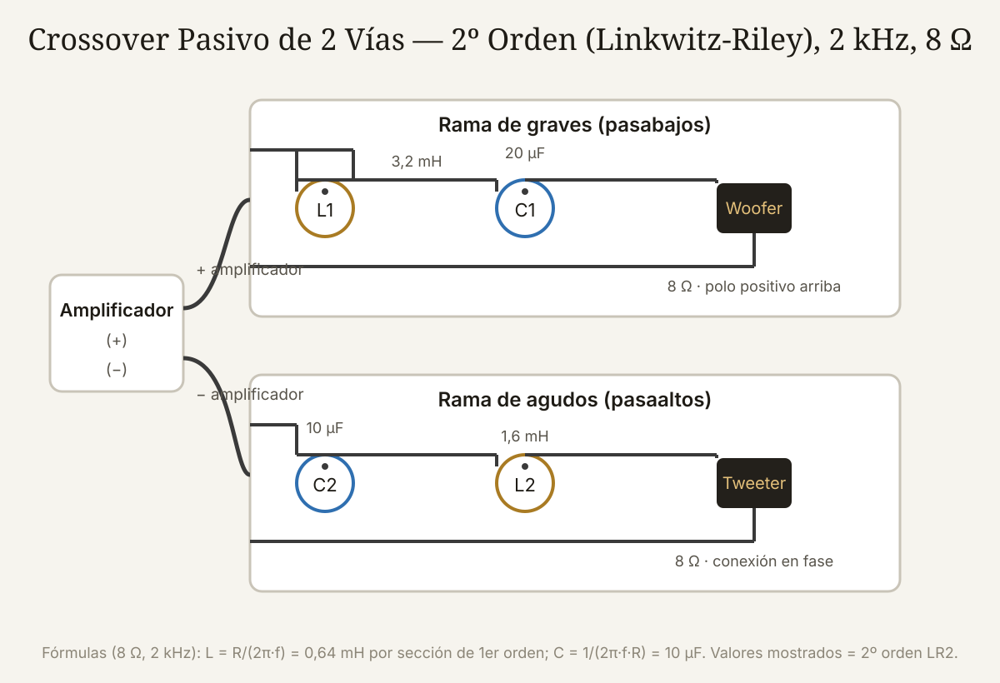

Qué cubre esta guía
- Qué es un crossover y por qué se necesita
- Frecuencia de cruce, pendiente y orden
- Alineaciones: Butterworth, Linkwitz-Riley y Bessel
- Componentes: bobinas, capacitores y resistencias
- Diseño paso a paso: segundo orden LR a 2,5 kHz
- El cálculo numérico completo
- Impedancia, sensibilidad y polaridad de los drivers
- Simulación y medición
- Construcción física del crossover
- Problemas comunes y soluciones
- Conclusión
- Preguntas frecuentes
Qué es un crossover y por qué se necesita
Ningún altavoz reproduce bien todo el espectro audible. Un woofer de 6 pulgadas no llega con energía a 15 kHz, y un tweeter de cúpula no puede mover el aire necesario a 80 Hz. El crossover (filtro divisor de frecuencias) resuelve el problema: envía los graves y medios al woofer, los agudos al tweeter, y alinea las dos fuentes para que la suma suene como un solo altavoz.
El crossover es, de hecho, el corazón del diseño de un altavoz de 2 vías. Un crossover mal diseñado hace que dos excelentes drivers suenen peor que un full-range mediocre: la zona de cruce puede tener un pico, un valle, o una cancelación de fase que destruye la imagen estéreo.
Dos tipos de crossover dominan:
- Activo (electrónico): filtra la señal a nivel de línea antes del amplificador, con un amplificador por vía. Más flexible y preciso, pero más caro y complejo.
- Pasivo: filtros de bobinas, capacitores y resistencias conectados entre el amplificador y los drivers, dentro de la caja. Es el estándar de los altavoces comerciales de gama media y del DIY de este artículo: un solo amplificador y sin electrónica extra.
Frecuencia de cruce, pendiente y orden
Tres parámetros definen el filtro:
1. Frecuencia de cruce (fc): el punto donde las dos ramas están a media potencia (−3 dB o −6 dB según la alineación). La elige el límite superior útil del woofer y el límite inferior del tweeter: un woofer de 6,5" con cono de aluminio suele cruzar a 2–3 kHz; uno de papel más blando, a 1,5–2,5 kHz; los full-range con whizzer a 5–7 kHz. Cruza dentro del rango donde ambos drivers están en su zona lineal.
2. Pendiente: la velocidad de atenuación, medida en dB por octava. Una pendiente de primer orden cae 6 dB/oct, una de segundo 12 dB/oct, tercero 18 dB/oct y cuarto 24 dB/oct.
3. Orden: el número de elementos reactivos (bobinas y capacitores) por rama. Más orden = pendiente más pronunciada = menos energía fuera de banda, pero más fase y más componentes.
| Orden | Pendiente | Componentes por rama | Uso típico |
|---|---|---|---|
| 1º | 6 dB/oct | 1 (L o C) | Diseños minimalistas; exige drivers muy suaves fuera de banda |
| 2º | 12 dB/oct | 2 (L + C) | El estándar DIY: buen equilibrio, 2 componentes por rama |
| 3º | 18 dB/oct | 3 | Protege tweeters delicados |
| 4º | 24 dB/oct | 4 | El favorito de los diseños serios (Linkwitz-Riley de 4º orden) |
Alineaciones: Butterworth, Linkwitz-Riley y Bessel
La alineación describe la respuesta del filtro en la zona de cruce, y define cuánto se suman las dos ramas:
- Butterworth (BW): respuesta plana en cada rama individual, pero las ramas se suman en fase y el cruce presenta un pico de +3 dB si no se invierte la polaridad del tweeter. Se usa con inversión de polaridad en segundo orden.
- Linkwitz-Riley (LR): cada rama cae a −6 dB en el cruce, y la suma es plana y en fase sin pico. Es la alineación más usada en 2º y 4º orden porque perdonas errores de fase del mundo real.
- Bessel: retardo de grupo máximo plano (transitorios más fieles) a costa de una pendiente inicial más suave. Rara en pasivos de 2 vías, común en equipos profesionales.
Regla práctica: elige Linkwitz-Riley de segundo orden (LR2) para tu primer diseño. Es la que este artículo calcula en detalle: solo dos componentes por rama, fase benigna y suma plana, la combinación más perdonadora del mundo DIY.
Componentes: bobinas, capacitores y resistencias
Los tres componentes pasivos y sus reglas de calidad:
| Componente | Función | Qué comprar |
|---|---|---|
| Bobina (inductor) | Deja pasar graves, bloquea agudos (pasabajos) | Núcleo de aire (sin saturación, sin distorsión); calibre de alambre ≥ 0,8 mm |
| Capacitor | Deja pasar agudos, bloquea graves (pasaaltos) | Polipropileno (film) de buena tolerancia (±5 %); evita electrolíticos bipolares en la señal |
| Resistencia | Atenuación (L-pad) y ajuste de impedancia | Resistencias de potencia ≥ 10 W para el L-pad |
Los valores comerciales no siempre coinciden con los calculados: se usan los valores estándar más cercanos (serie E12/E24) y, para capacitancias grandes, se combinan capacitores en paralelo (10 µF + 4,7 µF = 14,7 µF). La tolerancia del componente introduce error de frecuencia de cruce: un capacitor de ±10 % desplaza el cruce ~10 %, por eso se prefiere ±5 %.
Diseño paso a paso: segundo orden LR a 2,5 kHz
Vamos a diseñar el crossover del altavoz de 2 vías del proyecto de altavoz Bluetooth Hi-Fi: woofer de 6,5" y tweeter de cúpula, ambos de 8 Ω nominales, cruce a 2.500 Hz.
Paso 1 — Elige la topología LR2. El filtro de segundo orden Linkwitz-Riley es dos filtros de primer orden en cascada por rama. Las fórmulas canónicas (con la impedancia nominal R y la frecuencia fc en Hz):
Para CADA rama de segundo orden LR:
Rama pasabajos (woofer):
L_serie = R / (2 · π · fc) // en henrios
C_paralelo = 1 / (2 · π · fc · R) // en faradios
Rama pasaaltos (tweeter):
C_serie = 1 / (2 · π · fc · R) // en faradios
L_paralelo = R / (2 · π · fc) // en henriosPaso 2 — Calcula. Con R = 8 Ω y fc = 2.500 Hz (los valores completos en la siguiente sección): L ≈ 0,51 mH y C ≈ 7,96 µF por rama.
Paso 3 — Verifica la fase. En LR2 ambas ramas salen con la misma fase en la zona de cruce; conecta ambos drivers en la misma polaridad (o invierte ambos — la regla es que los dos se conecten igual entre sí en LR2, a diferencia del Butterworth de 2º orden que exige invertir el tweeter).
El cálculo numérico completo
Datos:
R = 8 Ω (impedancia nominal de ambos drivers)
fc = 2.500 Hz (frecuencia de cruce)
Rama pasabajos (woofer):
L1 = R / (2·π·fc) = 8 / (6,2832 · 2500) = 0,000509 H = 0,51 mH
C1 = 1 / (2·π·fc·R) = 1 / (6,2832 · 2500 · 8) = 0,00000796 F = 7,96 µF
Rama pasaaltos (tweeter):
C2 = C1 = 7,96 µF
L2 = L1 = 0,51 mH
Valores comerciales más cercanos:
L1 = L2 = 0,5 mH (núcleo de aire)
C1 = C2 = 8,2 µF (o 4,7 + 3,3 µF en paralelo)Con esos valores, la frecuencia real de cruce queda:
fc = R / (2·π·L) = 8 / (6,2832 · 0,0005) = 2.546 Hz (con L = 0,5 mH)
fc = 1 / (2·π·C·R) = 1 / (6,2832 · 0,0000082 · 8) = 2.426 Hz (con C = 8,2 µF)El par de valores comerciales cruza alrededor de 2,5 kHz, perfecto para el woofer de 6,5". Si el woofer tiene una impedancia real de 6 Ω en la zona de cruce (impedancias reales de los drivers no son planas), el cruce sube un poco: por eso el siguiente paso es simular y medir, no quedarse con la hoja de cálculo.
Impedancia, sensibilidad y polaridad de los drivers
Tres realidades de los drivers que el cálculo ideal ignora:
1. La impedancia real no es constante. Un woofer puede tener un pico de resonancia a 60 Hz (30–50 Ω) y caer a 6–7 Ω en el cruce; un tweeter suele estar en 4–6 Ω a 2,5 kHz. Como el crossover filtra voltaje y los drivers consumen según su impedancia real, la frecuencia de cruce efectiva se desplaza. La solución profesional: medir la impedancia (con REW o un adaptador) y usar esos datos en la simulación, o cruzar con margen usando la impedancia promedio de la zona de cruce.
2. La sensibilidad define el balance. Si el tweeter tiene 92 dB/1W/1m y el woofer 88 dB, el tweeter dominará por 4 dB. Se corrige con un L-pad: dos resistencias (una en serie, una en paralelo con el tweeter) que atenúan sin cambiar la impedancia vista por el filtro. Para atenuar 4 dB en 8 Ω: R1 ≈ 1,8 Ω en serie y R2 ≈ 15 Ω en paralelo (los valores exactos salen de las fórmulas del L-pad, que se pueden calcular en cualquier calculadora de L-pad online o en la hoja de cálculo del simulador).
3. La polaridad es ley. En LR2 los dos drivers van en la misma fase eléctrica; conectar el tweeter invertido crea un hueco profundo en la zona de cruce. Antes de cerrar la caja, prueba de polaridad: reproduce una señal cerca del cruce y escucha el tono; si al invertir la polaridad del tweeter el sonido se vuelve más lleno, déjalo así (y revisa la alineación que elegiste).
Simulación y medición
Ningún crossover moderno se diseña a ciegas con la calculadora. El flujo de trabajo real:
- Mide la impedancia de cada driver en la caja (REW + jig de medición de impedancia, o un medidor de impedancia económico).
- Mide la respuesta en frecuencia de cada driver montado en la caja, a 30–60 cm con un micrófono de medición (miniDSP UMIK-1 o similar). Sin respuesta medida, el crossover se diseña a ciegas.
- Simula con VituixCAD o XSim: importa las curvas medidas, dibuja el esquema del crossover y ajusta valores hasta que la respuesta suma sea plana (±2 dB) en el rango útil.
- Construye, mide y ajusta: arma el crossover en una placa de prueba, mide la respuesta del altavoz completo en el eje y a 15–30° fuera del eje, y ajusta L-pad y valores finos.
Esta es la diferencia entre un "altavoz con crossover" y un altavoz bien diseñado: los valores calculados son el punto de partida, los valores simulados con datos reales son el diseño.
Construcción física del crossover
Reglas de montaje que evitan problemas de sonido y de seguridad:
- Placa base: monta los componentes sobre una placa de madera o plástico (los PCB de crossover comerciales también existen), fijados con silicona caliente o bridas, no sueltos dentro de la caja.
- Separación de bobinas: las bobinas de aire generan campos magnéticos que interactúan; sepáralas al menos 2 diámetros entre sí y orienta sus ejes perpendiculares. Una bobina pegada al imán del woofer induce ruido.
- Cableado: usa cable de sección adecuada (≥ 1 mm²) y conexiones firmes (crimp, terminal o soldadura con buen estaño); un contacto intermitente produce chasquidos y pérdida intermitente de una vía.
- Protección: si el altavoz puede recibir potencia alta, los capacitores de la rama del tweeter trabajan a voltajes considerables: usa capacitores con tensión nominal ≥ 100 V y resistencias del L-pad de al menos 10 W (el tweeter solo recibe agudos, pero los transitorios pico son altos).
- Prueba antes de cerrar: con el altavoz completo, reproduce música a volumen moderado y barridos; verifica que ambas vías suenen y que no haya chasquidos al tocar los cables.
Problemas comunes y soluciones
| Síntoma | Causa más probable | Solución |
|---|---|---|
| Hueco profundo en la zona de cruce | Polaridad invertida en una rama (LR2) | Conecta ambos drivers en la misma polaridad |
| Pico en el cruce (+6 dB o más) | Alineación Butterworth sin inversión, o cruce en un pico de impedancia | Cambia a LR2 o invierte el tweeter; revisa la impedancia real |
| Suenan demasiado los agudos | Tweeter de mayor sensibilidad sin L-pad | Calcula e instala el L-pad de atenuación |
| El tweeter se quema | Frecuencia de cruce demasiado baja o pendiente insuficiente | Sube fc dentro del rango del tweeter; usa 3er/4º orden |
| Chasquidos al mover el altavoz | Conexiones flojas o cable desnudo | Revisa cada terminal y refuerza las soldaduras |
| El bajo suena "descajetado" | Rama pasabajos sin bobina de núcleo de aire bien dimensionada | Bobina con calibre suficiente y sin saturación a potencia alta |
Conclusión
Diseñar un crossover pasivo de 2 vías es el paso que separa al que junta componentes del que diseña altavoces. Con la alineación Linkwitz-Riley de segundo orden, dos fórmulas y un par de valores comerciales, consigues un filtro correcto; con la impedancia y la respuesta medidas, el simulador y un micrófono, consigues un filtro bien diseñado.
El camino recomendado: calcula con las fórmulas, simula con los datos reales de tus drivers, construye con buenos componentes y mide el resultado. Ese circuito — del cálculo a la medición — es exactamente el mismo que usan los diseñadores profesionales, y convierte tu altavoz casero en un instrumento con carácter propio.
Preguntas frecuentes
¿Qué frecuencia de cruce debo usar para un woofer de 6,5 pulgadas?
Para un woofer de 6,5" con tweeter de cúpula, el cruce típico va de 2 a 3 kHz. El límite práctico lo marca el comportamiento del woofer en sus agudos (cuando el cono empieza a 'partirse' en modos de rotación) y la capacidad del tweeter en graves (su frecuencia de resonancia, típicamente 800 Hz–1,5 kHz, y su desplazamiento máximo). Con 2,5 kHz estás cómodo en el 90 % de los casos; consulta la curva de respuesta de tus drivers: cruza donde el woofer aún está plano y el tweeter ya está en su zona lineal.
¿Qué es mejor: crossover de 6 dB, 12 dB o 24 dB por octava?
No hay un 'mejor' absoluto: cada pendiente exige drivers que cooperen. Los de 6 dB/oct son los más transparentes en fase pero dejan pasar mucha energía fuera de banda: solo funcionan con drivers excepcionalmente suaves fuera de su rango. Los de 12 dB/oct (2º orden) equilibran componentes, fase y protección, y con alineación Linkwitz-Riley son la elección clásica del DIY. Los de 24 dB/oct (4º orden) protegen mejor al tweeter y son el estándar de los diseños serios, a costa de más componentes y más complejidad. Para empezar: 12 dB/oct LR2.
¿Puedo usar condensadores electrolíticos en un crossover?
Se puede (los altavoces económicos los usan), pero no es recomendable: los electrolíticos bipolares tienen tolerancia amplia, se degradan con los años y distorsionan más que un capacitor de polipropileno. La diferencia es pequeña en un altavoz de 50 dólares, pero audible en uno bueno. Si el presupuesto aprieta, usa electrolíticos bipolares solo para la rama del woofer (donde la señal es grande y la distorsión menos audible) y polipropileno en la rama del tweeter, que es donde se nota la calidad del capacitor.
¿Necesito un L-pad si mi woofer y mi tweeter tienen la misma sensibilidad?
Si ambos drivers declaran exactamente la misma sensibilidad (por ejemplo, 89 dB), técnicamente no. Pero dos matices: la sensibilidad declarada se mide en la banda del fabricante, y en la práctica el woofer y el tweeter pueden diferir 1–3 dB en la zona de cruce por la propia respuesta del driver montado en la caja. Lo correcto es medir la respuesta de cada vía en el altavoz real y decidir el L-pad con esos datos: a menudo hace falta atenuar 1–2 dB aunque las hojas de datos coincidan.
¿Cuánto cuesta el crossover de un altavoz de 2 vías?
Con componentes de calidad media (bobinas de núcleo de aire, capacitores de polipropileno y resistencias de potencia), el crossover completo de un altavoz de 2 vías ronda los 15–35 USD en componentes. Los capacitores grandes (8–10 µF) y las bobinas de 0,5–1 mH bien calibradas son los ítems más caros. Si añades el tiempo de diseño, simulación y montaje, el costo real está en la hora de taller: por eso comprar un crossover genérico de 5 dólares 'para 8 ohm' suele sonar peor que diseñar el propio.
Este artículo es contenido editorial independiente: no contiene ubicaciones patrocinadas ni enlaces de afiliado. Si en futuras actualizaciones se agregan enlaces a proveedores de componentes, serán identificados explícitamente. El código y las conexiones son referenciales y deben adaptarse y probarse con tu propio hardware. Si detectas un error en esta guía, por favor avísanos.
Sigue aprendiendo
Construye el altavoz completo con esta guía hermana: Altavoz Bluetooth de Alta Fidelidad, o explora el procesamiento de audio por software en Teensy 4.1 vs Arduino Due.
Fuentes primarias y lecturas recomendadas
Referencias de diseño de filtros para altavoces y herramientas de simulación. Los valores calculados deben verificarse con la impedancia real de los drivers.
- Siegfried Linkwitz — Filtros crossover y alineaciones
- TI — Nota de aplicación sobre filtros activos y pasivos (conceptos de orden y pendiente)
- XSim — Simulador de crossover gratuito
- VituixCAD — Software de diseño y simulación de altavoces
- REW — Room EQ Wizard (medición de impedancia y respuesta)
- audioXpress — Publicaciones técnicas sobre diseño de altavoces
Enlaces revisados: 15 de agosto de 2026.